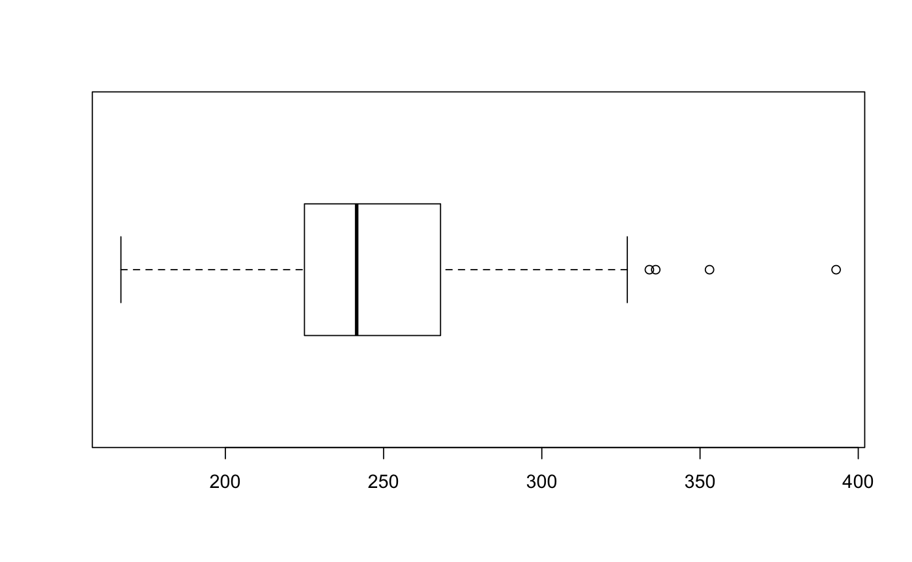
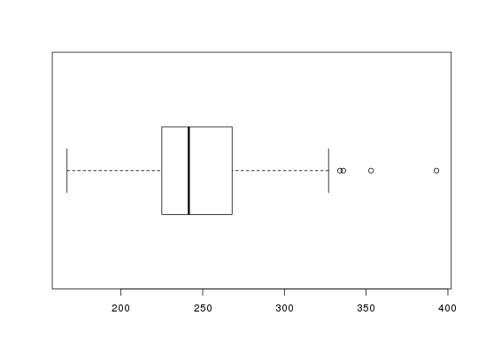

Data for Exercises 1.56, 1.75, 3.69, and 5.60
Framingh
A data frame/tibble with 62 observations on one variable
a numeric vector with cholesterol values
R. D'Agostino, et al., (1990) "A Suggestion for Using Powerful and Informative Tests for Normality," The American Statistician, 44 316-321
Kitchens, L. J. (2003) Basic Statistics and Data Analysis. Duxbury
stem(Framingh$cholest)#> #> The decimal point is 1 digit(s) to the right of the | #> #> 16 | 7 #> 18 | 428 #> 20 | 020125678 #> 22 | 05560000122244668 #> 24 | 03678444668 #> 26 | 34777800288 #> 28 | 35 #> 30 | 008 #> 32 | 746 #> 34 | 3 #> 36 | #> 38 | 3 #>boxplot(Framingh$cholest, horizontal = TRUE)hist(Framingh$cholest, freq = FALSE)lines(density(Framingh$cholest))mean(Framingh$cholest > 200 & Framingh$cholest < 240)#> [1] 0.4032258# NOT RUN { ggplot2::ggplot(data = Framingh, aes(x = factor(1), y = cholest)) + geom_boxplot() + # boxplot labs(x = "") + # no x label theme_bw() + # black and white theme geom_jitter(width = 0.2) + # jitter points coord_flip() # Create horizontal plot ggplot2::ggplot(data = Framingh, aes(x = cholest, y = ..density..)) + geom_histogram(fill = "pink", binwidth = 15, color = "black") + geom_density() + theme_bw() # }